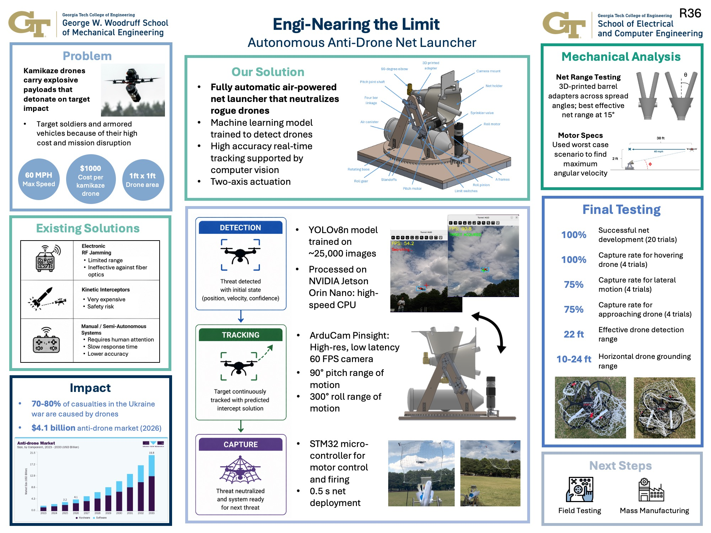

For Interdisciplinary Senior Design at Georgia Tech, I collaborated with a team of six to develop a low cost, kinetic, counter UAS system for the Defense Innovation Unit (DIU). Our team created an autonomous, vehicle mounted turret that uses computer vision to detect and track a drone, then a pneumatic net launcher to neutralize it.
Small, high speed, and highly manuverable kamikaze drones are increasingly targeting armored vehicles, risking lives and military missions. Current counter UAS solutions often rely on RF jamming, which is ineffective against drones using fiber optic communicaiton, or are expensive to deploy at a large scale such as missile systems. Lower cost solutions often require manual operation which is not feasible for personnel inside an armored vehicle.
Our final design is a vehicle-mounted, autonomous, net-launching turret which can track and intercept a rogue drone before it reaches an armored vehicle. The design uses computer vision to identify and track a drone up to 22 feet away. After the target is identified, the turret aims towards it and launches a net using compressed air, which has an effective range of over 7 feet away. The net entangles itself around the propellers of the enemy drone and halts its forward momentum, grounding it before it can get within the effective range of its explosive payload.
The project successfully demonstrated that it could be a robust and reliable counter UAS solution with successful field testing. The field testing yielded 100% capture rate for hovering drones, 75% capture rate for targets in lateral or approaching motion, and 100% successful net deployment. The field testing proved a 22ft detection range and a 10-24ft horizontal grounding range.
Key technical takeaways included:
